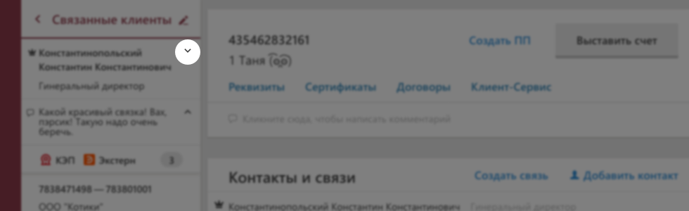
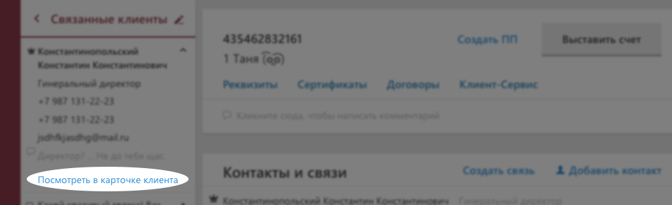

Интересно, как часто смотрят связи
_trackEvent(category, action, opt_label, opt_value, opt_noninteraction)
Category: client-connection
Action: open
Label: view-connetion
Наша гипотеза в том, что телефоны, почты и т.д. нужны только, в какой-то опредленный момент, а не при каждом просмотре связи. Проверим эту гипотезу.

_trackEvent(category, action, opt_label, opt_value, opt_noninteraction)
Category: client-connection
Action: view
Label: contact-details
Посмотрим, понятная ли фича, и востребована ли она.
_trackEvent(category, action, opt_label, opt_value, opt_noninteraction)
Category: client-connection
Action: view
Label: see-contact-link
Комментарии—новая функциональность, и непонятно, для чего их будут использовать. Поэтому пока комментарий в просмотре выводим польностью. По сворачиванию косвенно поймем, что он им мешает при просмотре, т.к. занимает много по длинне.

_trackEvent(category, action, opt_label, opt_value, opt_noninteraction)
Category: client-connection
Action: view
Label: collapse-comment